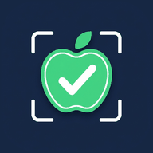

OkayEat reads barcodes with your camera on your device and sends only the barcode number to Open Food Facts to look up the product. Your preferences and scan history stay on your device. Ads are provided by Google AdMob. Contact: flicklabsapp@gmail.com